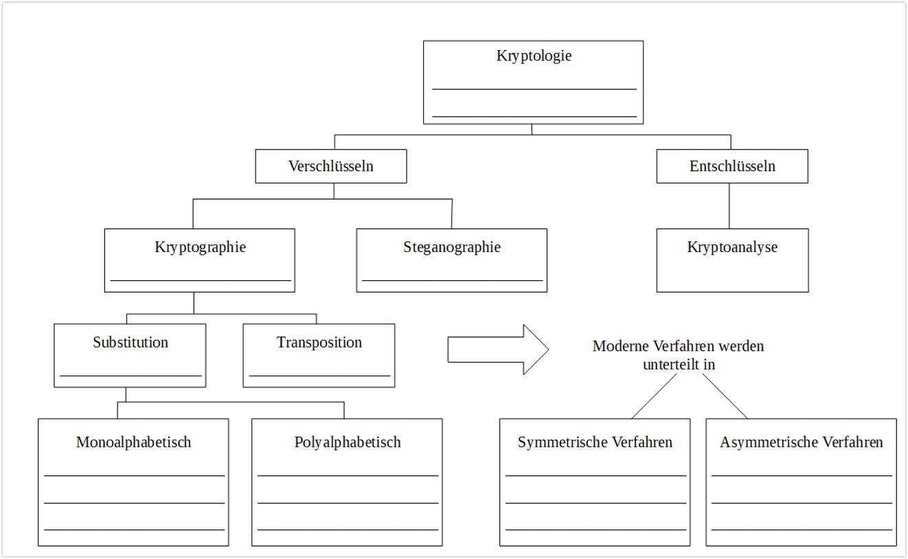

Schon Julius Caesar verschlüsselte seine Briefe, im Zweiten Weltkrieg entschied das Brechen der Enigma mit über den Kriegsverlauf, und heute ist jede WhatsApp-Nachricht verschlüsselt. Diese Seite verschafft dir einen Überblick über die Begriffe der Kryptologie.

Abb. 1: Übersicht der Kryptologie (zum Ausfüllen)
Die Abbildung ordnet die Verfahren nach der Tätigkeit: Wer den Schlüssel kennt, verschlüsselt und entschlüsselt mit Kryptographie; wer ihn nicht kennt, kann nur mit Kryptoanalyse entschlüsseln. Fachlich gliedert sich die Kryptologie in Kryptographie und Kryptoanalyse (siehe Merkkasten).
Die Begriffe im Einzelnen
Kryptologie
Kryptologie ist die Wissenschaft von der Verschlüsselung und Entschlüsselung von Informationen. Sie teilt sich in die zwei Bereiche Kryptographie (Verfahren entwickeln und anwenden) und Kryptoanalyse (Verfahren brechen).
Das Wort stammt aus dem Griechischen: „kryptos“ (verborgen) und „logos“ (Lehre).
Historisch wurde Kryptologie vor allem für militärische und diplomatische Zwecke genutzt. Heute ist sie unverzichtbar für Online-Banking, E-Mail-Verschlüsselung, digitale Signaturen und vieles mehr.
Verschlüsseln
Verschlüsseln bedeutet, lesbare Informationen (Klartext) in eine unleserliche Form (Geheimtext) umzuwandeln, sodass nur Berechtigte die Information wieder lesen können.
Dafür braucht man einen Schlüssel, der festlegt, wie die Umwandlung erfolgt.
Entschlüsseln
Entschlüsseln bedeutet, verschlüsselte Informationen in den Klartext zurückzuverwandeln. Das kann auf zwei Arten geschehen:
berechtigtes Entschlüsseln: mit Kenntnis des Schlüssels,
Kryptoanalyse: Brechen der Verschlüsselung ohne Kenntnis des Schlüssels.
Kryptographie
Kryptographie beschäftigt sich mit dem Entwickeln und Anwenden von Verschlüsselungsverfahren. Die klassischen Verfahren unterteilen sich in zwei Hauptkategorien:
Substitution: Zeichen werden durch andere Zeichen ersetzt.
Transposition: Zeichen werden in ihrer Reihenfolge umgeordnet.
Moderne Kryptographie verwendet mathematische Verfahren und arbeitet auf Bit-Ebene. Sie kombiniert Substitution und Transposition vielfach hintereinander (z. B. AES).
Steganographie
Steganographie ist die Kunst, Nachrichten zu verstecken. Bei der Kryptographie ist die Nachricht sichtbar, aber unleserlich; bei der Steganographie bleibt schon ihre Existenz verborgen.
Historisches Beispiel: Im antiken Griechenland soll man einem Sklaven den Kopf kahl geschoren, eine Nachricht auf die Kopfhaut tätowiert und ihn nach dem Nachwachsen der Haare als Boten geschickt haben.
Moderne Beispiele:
unsichtbare Tinte
versteckte Botschaften in den niederwertigsten Bits von Bilddateien
Wasserzeichen in digitalen Medien
Mikropunkte (Texte auf Stecknadelkopfgröße verkleinert)
Substitution
Substitution: Buchstaben oder Zeichen werden durch andere ersetzt. Man unterscheidet monoalphabetische und polyalphabetische Substitution.
Substitutionsverfahren gehören zu den ältesten kryptographischen Methoden. Sie sind einfach umzusetzen, je nach Variante aber unterschiedlich sicher.
Monoalphabetisch
Monoalphabetische Substitution: Jeder Buchstabe wird immer durch denselben anderen Buchstaben ersetzt. Die Zuordnung zwischen Klartext- und Geheimtextalphabet bleibt also konstant.
Beispiel: Caesar-Verschlüsselung
Verschiebung um 3 Stellen: A→D, B→E, C→F, …, X→A, Y→B, Z→C
Klartext: HALLO WELT
Geheimtext: KDOOR ZHOW
Die Caesar-Verschlüsselung hat nur 25 sinnvolle Schlüssel (Verschiebungen 1 bis 25) und ist deshalb sehr unsicher.
Sicherheit: Jede monoalphabetische Verschlüsselung lässt sich durch Häufigkeitsanalyse leicht brechen, da die häufigsten Buchstaben der Sprache (im Deutschen E, N, I, S, R) auch im Geheimtext am häufigsten vorkommen.
Polyalphabetisch
Polyalphabetische Substitution: Ein Buchstabe kann – abhängig von seiner Position im Text – durch verschiedene andere Buchstaben ersetzt werden. Das erschwert eine Häufigkeitsanalyse deutlich.
Beispiel: Vigenère-Verschlüsselung mit dem Schlüsselwort KEY
Das Schlüsselwort wird unter den Klartext geschrieben und wiederholt:
Klartext: H A L L O W E L T
Schlüssel: K E Y K E Y K E Y
Geheimtext: R E J V S U O P R
Jeder Buchstabe wird um den Wert des Schlüsselbuchstabens verschoben (K = 10, E = 4, Y = 24).
Das H wird mit K verschlüsselt → R (Verschiebung um 10).
Das erste L wird mit Y verschlüsselt → J (Verschiebung um 24).
Das zweite L wird mit K verschlüsselt → V (Verschiebung um 10).
Derselbe Buchstabe L wird also unterschiedlich verschlüsselt.
Historischer Hinweis: Die Vigenère-Verschlüsselung galt lange als unknackbar und wurde „Le Chiffre indéchiffrable“ (die unentzifferbare Verschlüsselung) genannt. Erst im 19. Jahrhundert fand man Methoden zur Kryptoanalyse (siehe 8.4).
Transposition
Transposition: Die Buchstaben des Klartexts bleiben erhalten, aber ihre Reihenfolge wird nach einem bestimmten Schema verändert.
Beispiel 1: Spaltentransposition
Klartext HALLOWORLD mit 5 Spalten:
H
A
L
L
O
W
O
R
L
D
Man schreibt den Text zeilenweise in die Tabelle und liest spaltenweise aus.
Geheimtext: HWAOLRLLOD
Beispiel 2: Skytale (antikes Sparta)
Ein Lederband wird eng um einen Stab gewickelt. Der Klartext wird in Längsrichtung des Stabes geschrieben, und zwar auf jeder Windung ein Zeichen pro Zeile. Wickelt man das Band ab, stehen die Zeichen durcheinander. Nur mit einem Stab gleichen Durchmessers wird der Text wieder lesbar.
Klartext HALLOWELT (9 Zeichen), das Band macht 3 Umwicklungen. In Längsrichtung passen also 3 Zeichen in eine Zeile (eines pro Windung), und es entstehen 3 Zeilen:
Windung 1
Windung 2
Windung 3
Zeile 1
H
A
L
Zeile 2
L
O
W
Zeile 3
E
L
T
Auf dem abgewickelten Band liegen die Zeichen einer Windung nebeneinander: erst Windung 1 (H, L, E), dann Windung 2 (A, O, L), dann Windung 3 (L, W, T).
Text auf dem Band: HLEAOLLWT
Um den passenden Stab gewickelt ergibt sich wieder: HALLOWELT
Die Skytale ist also eine Spaltentransposition mit 3 Spalten – vergleiche Aufgabe 8.2.3.
Kryptoanalyse
Kryptoanalyse ist die Wissenschaft vom Brechen verschlüsselter Nachrichten ohne Kenntnis des Schlüssels. Sie entwickelte sich parallel zur Kryptographie (siehe 8.6).
Wichtige Methoden:
Häufigkeitsanalyse: nutzt die typische Verteilung von Buchstaben in einer Sprache (wirksam bei monoalphabetischer Substitution),
Brute-Force-Angriff: systematisches Ausprobieren aller möglichen Schlüssel,
Kasiski-Test: bestimmt die Schlüssellänge der Vigenère-Verschlüsselung über wiederkehrende Muster,
Known-Plaintext-Angriff: Angriff, wenn Teile des Klartexts bekannt sind,
mathematische Analysen: Ausnutzen von Schwächen im Verschlüsselungsalgorithmus.
Symmetrische Verfahren
Symmetrische Verschlüsselung: Sender und Empfänger verwenden denselben Schlüssel zum Ver- und Entschlüsseln. Der Schlüssel muss vor der Kommunikation sicher ausgetauscht werden (siehe 8.3).
Vorteile:
sehr schnell und effizient,
ideal für große Datenmengen,
geringer Rechenaufwand.
Nachteile:
Der Schlüssel muss sicher übertragen werden (Schlüsselverteilungsproblem).
Bei n Teilnehmern werden n·(n−1)/2 Schlüssel benötigt.
Die Schlüsselverwaltung in großen Netzen ist aufwendig.
Enigma: Verschlüsselungsmaschine im Zweiten Weltkrieg,
One-Time-Pad: beweisbar sicher, wenn es korrekt verwendet wird (siehe 8.5).
Moderne Beispiele:
DES (Data Encryption Standard): 56-Bit-Schlüssel, seit 1998 per Brute Force gebrochen,
3DES: dreifache Anwendung von DES, langsam und inzwischen ebenfalls nicht mehr zugelassen,
AES (Advanced Encryption Standard): aktueller Standard mit Schlüssellängen von 128, 192 oder 256 Bit (siehe 8.7).
Asymmetrische Verfahren
Asymmetrische Verschlüsselung: Bei asymmetrischen Verfahren (Public-Key-Verfahren) besitzt jeder Teilnehmer ein Schlüsselpaar: einen öffentlichen Schlüssel zum Verschlüsseln und einen privaten Schlüssel zum Entschlüsseln (siehe 8.8).
Vorteile:
Kein geheimer Schlüsselaustausch nötig – der öffentliche Schlüssel darf offen verteilt werden.
einfachere Schlüsselverwaltung: Bei n Teilnehmern werden nur n Schlüsselpaare benötigt,
ermöglicht digitale Signaturen.
Nachteile:
deutlich langsamer als symmetrische Verfahren (Faktor 100 bis 1000),
höherer Rechenaufwand,
Man muss sicher sein, dass ein öffentlicher Schlüssel wirklich zur richtigen Person gehört (Zertifikate).
Wichtige Verfahren:
RSA: beruht auf der Schwierigkeit, große Zahlen zu faktorisieren; typische Schlüssellängen 2048 oder 4096 Bit,
Elliptische Kurven (ECC): kleinere Schlüssel bei gleicher Sicherheit,
Diffie-Hellman: Verfahren zur Schlüsselvereinbarung (siehe 8.10).
Hybride Verfahren: In der Praxis (z. B. HTTPS, E-Mail-Verschlüsselung) werden beide Verfahren kombiniert: Asymmetrisch wird ein zufälliger symmetrischer Sitzungsschlüssel ausgetauscht, mit dem dann die eigentlichen Daten verschlüsselt werden (siehe 8.11).
Verfahren erkennen
Liegen dir ein Klartext und der zugehörige Geheimtext vor, kannst du oft schon erkennen, zu welcher Klasse das Verfahren gehört. Die beiden Beispiele zeigen, wie du dabei vorgehst.
Beispiel 1 einfach
Ausgangssituation: Aus dem Klartext ABITUR wurde der Geheimtext AIUBTR. Ist das eine Substitution oder eine Transposition?
Buchstabenbestand vergleichen. Klartext: A, B, I, T, U, R. Geheimtext: A, I, U, B, T, R. Es sind genau dieselben Buchstaben, nur in anderer Reihenfolge. Warum? Eine Transposition ordnet nur um, eine Substitution ersetzt Zeichen und führt deshalb in der Regel neue Buchstaben ein.
Schema suchen. Schreibt man den Klartext zeilenweise in 2 Spalten (AB / IT / UR) und liest spaltenweise aus, erhält man A I U und B T R. Warum? Kennt man das Schema, ist das Verfahren genau bestimmt; die Spaltenzahl 2 ist der Schlüssel.
Ergebnis: Spaltentransposition mit 2 Spalten. Kontrolle: Zum Vergleich ergibt Caesar mit Verschiebung 1 aus ABITUR den Text BCJUVS – darin kommen neue Buchstaben vor, also Substitution.
Beispiel 2 komplex
Ausgangssituation: Eine Agentin hat dreimal die Nachricht TREFFEN mit drei verschiedenen Verfahren verschlüsselt. Abgefangen wurden: (1) TFREENFX, (2) WUHIIHQ, (3) BEJTNRS. Ordne die Verfahren ein und bestimme, wo möglich, den Schlüssel.
Muster des Klartexts notieren. In TREFFEN stehen an Position 4 und 5 zwei gleiche Buchstaben (FF), an Position 3 und 6 jeweils ein E. Warum? Wie mit solchen Wiederholungen umgegangen wird, verrät die Art der Substitution.
Geheimtext (1): Er enthält T, F, R, E, E, N, F und zusätzlich ein X. Bis auf das X ist es der Buchstabenbestand des Klartexts. Falle: Das X ist ein Füllzeichen, wie in Aufgabe 8.2.3. Schreibt man TREFFEN in 4 Spalten (TREF / FENX) und liest spaltenweise, entsteht genau TF RE EN FX. → Spaltentransposition mit 4 Spalten.
Geheimtext (2): Alle Buchstaben sind neu, also Substitution. Das Muster bleibt erhalten: An Position 4 und 5 steht II, an Position 3 und 6 jeweils H. Gleiche Klartextbuchstaben werden also gleich ersetzt. Jede Verschiebung beträgt 3 (T→W, R→U, E→H, …). → monoalphabetisch, Caesar mit Schlüssel 3.
Geheimtext (3): Das Muster ist zerstört: Aus FF wird TN, das erste E wird zu J, das zweite zu R. → polyalphabetisch. Weil der Klartext bekannt ist, lassen sich die Verschiebungen direkt berechnen (Geheimtext − Klartext, mod 26): T→B: 1 − 19 = −18 ≡ 8 (I), R→E: 4 − 17 = −13 ≡ 13 (N), E→J: 5 (F), F→T: 14 (O), F→N: 8 (I), E→R: 13 (N), N→S: 5 (F). → Vigenère mit dem Schlüsselwort INFO.
Ergebnis: (1) Transposition, (2) monoalphabetische Substitution (Caesar 3), (3) polyalphabetische Substitution (Vigenère, INFO). Kontrolle bzw. Falle: Ein erhaltenes Muster beweist allein noch nicht, dass das Verfahren monoalphabetisch ist: Bei Vigenère werden gleiche Buchstaben auch gleich verschlüsselt, wenn ihr Abstand ein Vielfaches der Schlüssellänge ist (8.3, 8.4). Sicher ist die Einordnung erst, wenn man – wie hier – prüft, dass die Verschiebung überall gleich ist. Dass man mit einem einzigen bekannten Klartext den ganzen Vigenère-Schlüssel erhält, zeigt außerdem, wie gefährlich ein Known-Plaintext-Angriff ist.
Praxisbezug: Kryptologie im Alltag und im Beruf
Alltag: Beim Online-Banking, bei WhatsApp oder Signal und bei jedem Aufruf einer HTTPS-Seite arbeiten moderne Nachfahren von Substitution und Transposition. Steganographie begegnet dir in unsichtbaren Wasserzeichen, mit denen Streamingdienste und Fotoagenturen Raubkopien zurückverfolgen.
Beruf: Kryptologinnen und Kryptologen arbeiten z. B. beim Bundesamt für Sicherheit in der Informationstechnik (BSI), das mit der Technischen Richtlinie TR-02102 festlegt, welche Verfahren und Schlüssellängen in Deutschland als sicher gelten. In Unternehmen prüfen Pentesterinnen und Pentester, ob Verschlüsselung richtig eingesetzt wird. Einen Einstieg bietet z. B. ein Informatikstudium mit Vertiefung IT-Sicherheit an der TU Dresden.
Das Wichtigste
Kryptologie ist die Wissenschaft von der Verschlüsselung. Sie besteht aus zwei Teilgebieten: Kryptographie – Entwurf und Anwendung von Verfahren, die Nachrichten für Unbefugte unlesbar machen, Kryptoanalyse – Brechen solcher Verfahren, also Gewinnen des Klartexts oder Schlüssels ohne Kenntnis des Schlüssels. Steganographie ist keine Verschlüsselung: Sie versteckt die Existenz einer Nachricht.
Kerckhoffs-Prinzip (Auguste Kerckhoffs, 1883): Die Sicherheit eines Verschlüsselungsverfahrens darf nur von der Geheimhaltung des Schlüssels abhängen, nicht von der Geheimhaltung des Verfahrens. Deshalb sind moderne Verfahren wie AES und RSA öffentlich bekannt und werden weltweit geprüft.
Grundaufgaben
Aufgabe 8.2.1: Übersicht vervollständigen AFB I
Öffne die Begriffe oben nacheinander und vervollständige die Übersicht in Abb. 1. Trage in jedes Feld eine kurze Erklärung bzw. Beispielverfahren ein.
Aufgabe 8.2.2: Umkehrung AFB I
Schreibe eine Funktion umkehren(text), die den Text rückwärts ausgibt.
Beispiel: „HALLO“ → „OLLAH“
Schreibe die Funktion.
Begründe, warum das keine sichere Verschlüsselung ist.